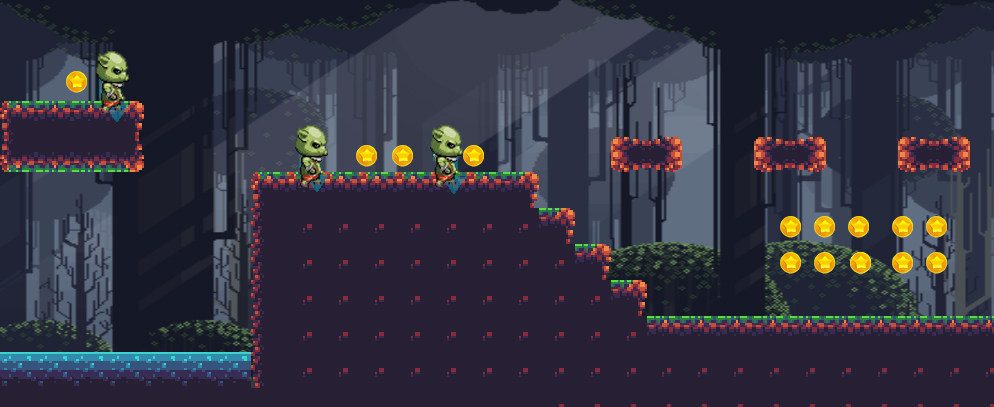
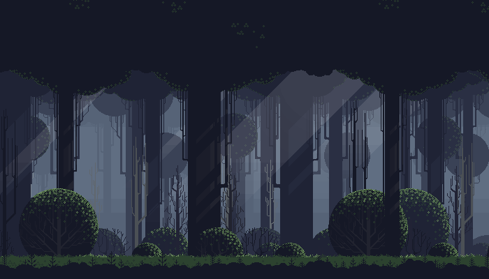
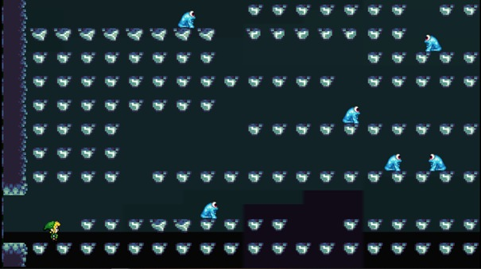
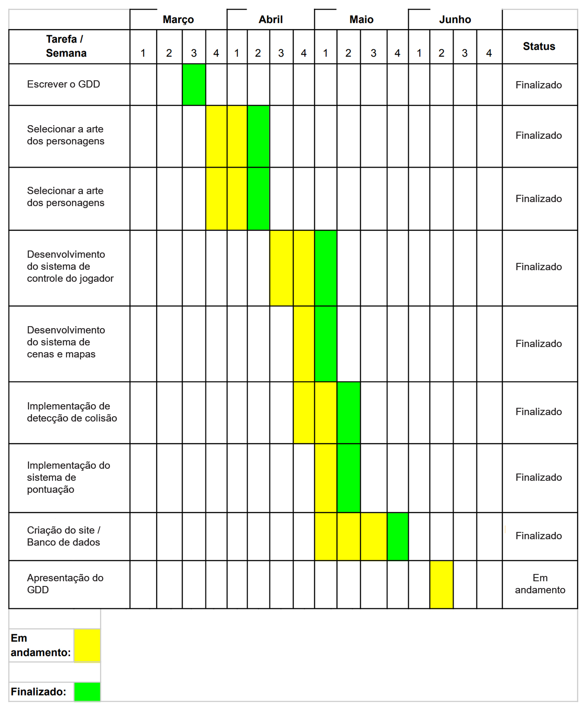

A História se passa em Teburn, um grande e prospero Reino de Duendes. No dia de Sontan (um dia muito importante e de grandes festas para este reino), aconteceu uma grande tragédia: O Magnifico e Bondoso Rei Damva foi sequestrado pelos Darkcas, um esquadrão de seres mercenários e sem escrúpulos, que com este sequestro querem conquistar o comando do Reino por meio de chantagem.
Neste momento entra personagem principal, que se chama Sweeney, ele é um duende do reino de Teburn, que por ser órfão e não ter nada a perder (além de ser um ótimo guerreiro), decide ir sozinho resgatar o Rei.
Então Sweeney vai até os territórios dos inimigos (florestas sombrias e pântanos) e batalha com esses mercenários até que enfim consegue resgatar o Rei Damva.

A mecânica do jogo é baseada nos jogos antigos de plataforma, como Super Mario World, onde tem um cenário com diversos obstáculos onde você tem que pular e inimigos no qual deve eliminar.

Sweeney – 20 Anos - Duende.

Movimentos:

A câmera do jogo é no estilo clássico 2D de plataforma, onde as personagens aparecem de perfil, como nos famosos jogos antigos de Super Mario e Sonic.

Floresta Sombria.

Phasmos – Orcs-Porcos.

HUD na tela de jogo tem a indicação de vida, tempo e moedas coletadas.

As linguagens utilizadas foram HTML, CSS, SCSS e JavaScript.

No decorrer do mês de março, nos reunimos em grupo para montarmos o nosso GDD. No decorrer da mesma semana, separamos as funções de cada um dentro do projeto e foi criado a história do jogo. Em seguida, o grupo se reuniu novamente para definirmos o designer dos personagens.